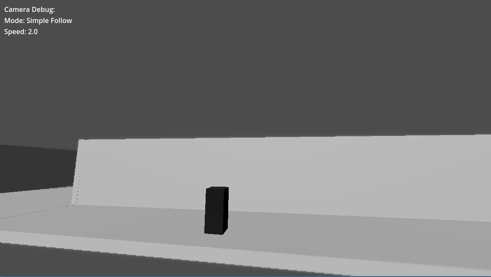
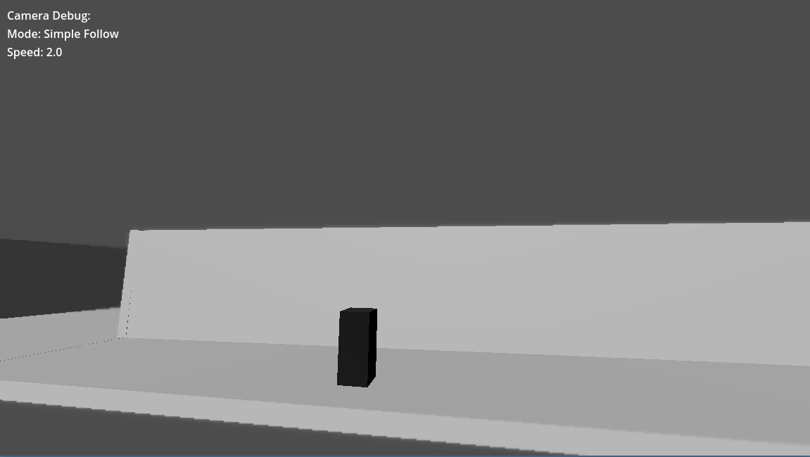
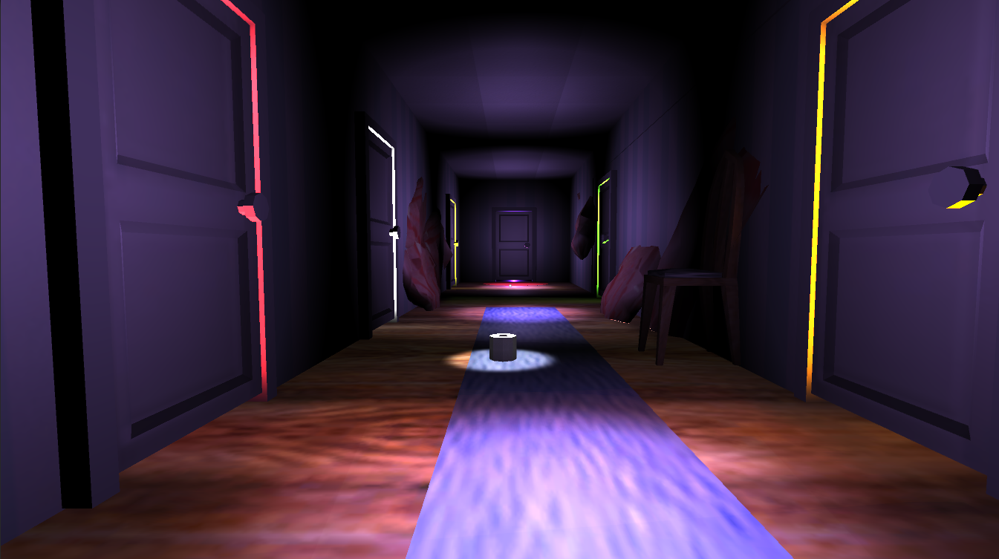
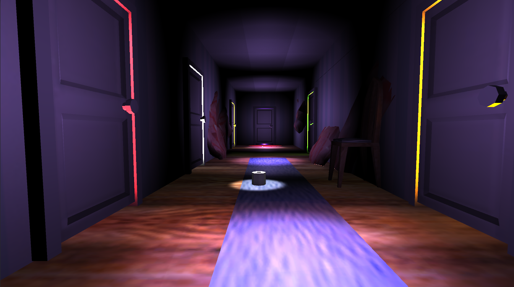

Particle Paint
Project Release: TBA
Engine: Unreal Engine 5
Programming Language: Blueprints (UE Visual Scripting)
Project Status: In Active Development
Particle Paint is a personal project developed in Unreal Engine 5 that functions as a small painting application utilizing the engine's native particle systems to create dynamic visual effects.
My core contribution was developing several robust systems, including multiple custom brushes, brush sensitivity controls (tied to mouse input for dynamic sizing), and a final tool for exporting the canvas to a PNG image.
I currently have multiple major updates planned, with a goal to release the project publicly in the near future.
Skills:
- Unreal Engine 5
- Blueprints (Systems Programming)
- Image Processing & I/O
Example Drawing (exported from the game):
Little Nightmares-Style Camera (Godot Engine Plugin)
Project Completion: November 2025
Engine: Godot
Programming Language: GDScript
Project Link: Cinematic Camera Plugin
This is a reusable plugin developed in GDScript for the Godot Engine. I engineered and implemented this system to address a complex level design challenge by replicating the confined, cinematic camera perspective seen in games like Little Nightmares.
The core system seamlessly blends 2D-style character movement with complex 3D camera constraints. My work focused heavily on integrating advanced camera logic with the Godot editor, utilizing a spline-based rail system that meticulously controls the camera's fixed position, rotation, and focus points.
The resulting tool is robust, reusable, and designed for easy implementation across new projects. While initially intended only for private use, I decided to release the tool publicly! The tool can be downloaded from Github using the link above!
Skills:
- Godot Engine (4+)
- GDScript (OOP)
- Custom Tool/Plugin Architecture
Cinematic View Examples:
 

Darkness of Anima
Project Release: July 2022
Engine: Unity
Project Link: Darkness of Anima
Darkness of Anima was the final project I worked on as part of my studies at the Academy of Interactive Entertainment in Seattle, WA. This project is a turn-based RPG and was the culmination of 4 months of hard work with 9 people in the Unity engine.
I served as Director and Lead Designer on the project. My primary responsibilities centered on environmental narrative and level design: I crafted the level layouts and built the dark, atmospheric environments in-engine, using assets to communicate the game's lore and story without relying solely on dialogue.
As Director, I oversaw the project's production pipeline, ensuring the artistic vision and design goals remained cohesive across all disciplines (Art, Design, and Programming). The game achieved a finished prototype state and was released publicly on the indie game service itch.io.
Skills:
- Unity Engine
- Environmental Storytelling & Level Design
- Team Leadership and Production Direction
In-Game Screenshots:

Living Nightmare
Project Release: July 2021
Engine: Unity
Project Link: Living Nightmare
Living Nightmare was the final project of my first year at AIE Seattle. This project is a puzzle-horror game developed over two months with a team of nine in the Unity engine.
I served as the Lead Game Designer. My responsibilities included creating level design layouts, building environments in-engine, and directing design workflow while assisting my peers throughout production.
The game achieved a finished prototype state and was released publicly on itch.io at the conclusion of the school year.
Skills:
- Unity Engine
- Puzzle Design & Prototyping
- Design Workflow Management
In-Game Screenshots:
 
